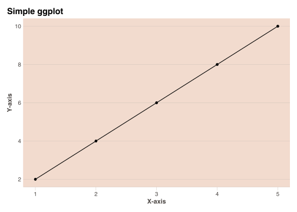
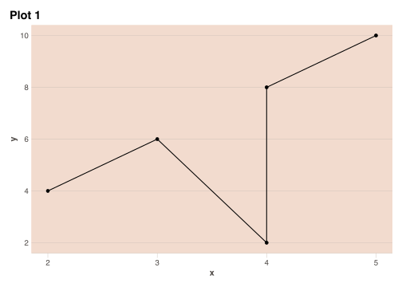
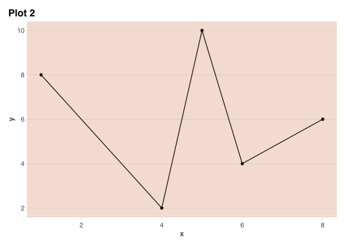

#remotes::install_github("Financial-Times/ftplottools")
library(ftplottools)
library(ggplot2)Test
Test of different Markdown elements.
access this page by running quarto preview in the terminal and going to url /blog/test/
Header 1
Header 2
Header 3
Header 4
Header 5
print("This is a code block)Quote
Author
- List
- List
- List
- List
- List
- List
Lets show the normal text: Normal Text (Did you see this small caps example?), Bold and Italic, followed by an HR.
Here’s a simple footnote,1 , wow would you look at that a second footnote.2
Now some cool math:
E = mc^2
Table:
| Header 1 | Header 2 | Header 3 |
|---|---|---|
| Cell 1 | Cell 2 | Cell 3 |
| Cell 4 | Cell 5 | Cell 6 |
| Cell 7 | Cell 8 | Cell 9 |
| Cell 10 | Cell 11 | Cell 12 |
Lets create a theme to better fit the visual style of the website
data <- data.frame(x = c(1, 2, 3, 4, 5),
y = c(2, 4, 6, 8, 10))
plot_themed <- ggplot(data, aes(x, y)) +
geom_point() +
geom_line() +
labs(title = "Simple ggplot",
x = "X-axis",
y = "Y-axis") +
ft_theme() +
theme(
panel.background = element_rect(fill = "#F2DBCE", color="#F2DBCE"),
plot.background = element_rect(fill = "transparent", color="transparent")
)
plot_themed

Now lets have two plots side by side with layout-ncol: 2, and hide the code
Code
data1 <- data.frame(x = c(4, 2, 3, 4, 5),
y = c(2, 4, 6, 8, 10))
data2 <- data.frame(x = c(4, 6, 8, 1, 5),
y = c(2, 4, 6, 8, 10))
plot_1 <- ggplot(data1, aes(x, y)) +
geom_point() +
geom_line()+
labs(title = "Plot 1") +
ft_theme() +
theme(
panel.background = element_rect(fill = "#F2DBCE", color="#F2DBCE"),
plot.background = element_rect(fill = "transparent", color="transparent")
)
plot_2 <- ggplot(data2, aes(x, y)) +
geom_point() +
geom_line()+
labs(title = "Plot 2") +
ft_theme() +
theme(
panel.background = element_rect(fill = "#F2DBCE", color="#F2DBCE"),
plot.background = element_rect(fill = "transparent", color="transparent")
)
plot_1
plot_2

